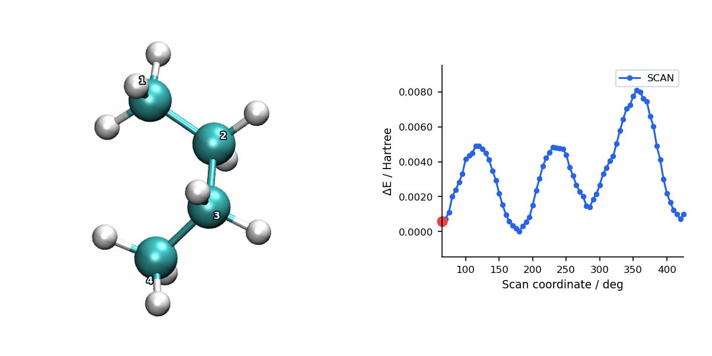

PES Scan with CG Optimization
Overview
Conjugate Gradient (CG) is available for relaxed PES scans through #scan(method=cg). It reuses the CG-only mode of MAPLE's SD/CG optimizer family at each constrained scan point.
CG is more efficient than pure SD when the starting geometry is already reasonable, while still keeping memory usage low.
Parameters
Per-point CG settings reuse the same controls as #opt(method=cg). With method=cg the SD phase is disabled at each scan point; the scan driver keeps per-point optimizer verbosity quiet.
| Parameter | Type | Default | Description |
|---|---|---|---|
max_step |
float | 0.2 |
Maximum step length in Angstrom. |
max_iter |
int | 256 |
Maximum CG iterations per scan point. |
cg_restart_threshold |
float | 0.2 |
Restart CG directions when the gradient change ratio exceeds this value. |
cg_beta_method |
str | "prp+" |
Conjugate gradient beta formula. prp+ (Polak–Ribière-Plus) is recommended for molecular optimization. |
diis_enabled |
bool | True |
Enable DIIS extrapolation acceleration. |
diis_store_every |
int | 5 |
Store a DIIS snapshot every N steps. |
diis_min_snapshots |
int | 3 |
Minimum snapshots required before DIIS extrapolation is attempted. |
diis_memory |
int | 6 |
Maximum number of DIIS snapshots stored. |
verbose |
int | 0 in scans |
Per-point optimizer verbosity. Scan keeps this low so the scan log stays readable. |
Input Example
Checked-in MAPLE example: example/scan/cg/butane_torsion.inp. This is the relaxed butane torsion scan shown in the visualization below:
#model=aimnet2nse
#scan(method=cg,mode=relaxed)
#device=gpu0
C -0.52081539 1.11161504 -0.13989751
C 0.59078300 0.29318923 -0.77842290
C 1.32746823 -0.60957381 0.21152861
C 0.45259197 -1.70775275 0.79614860
H -0.94949784 1.80049876 -0.87488523
H -1.32977057 0.47261032 0.22606643
H -0.14081339 1.70426027 0.69821742
H 1.31638081 0.98145785 -1.22807656
H 0.17655991 -0.30881448 -1.59557540
H 1.74762224 -0.00673639 1.02502995
H 2.17359552 -1.07649793 -0.30658812
H 1.05410451 -2.37229845 1.42471640
H -0.00260239 -2.31098551 0.00433108
H -0.34575942 -1.29510299 1.41986360
S 1 2 3 4 5.0 72The final S line is a dihedral scan: four atom indices followed by a 5.0 degree step and 72 increments, producing 73 scan points including the initial geometry.
Scan Visualization
The animation below pairs the generated scan geometries with the energy profile for a relaxed butane torsion scan using CG.

When to Use CG Scans
- Smooth scan regions: CG converges much faster than SD on well-behaved scan-point surfaces by exploiting gradient history to build conjugate search directions.
- Memory-constrained scans: CG stores only the previous gradient vector, making it more memory-efficient than L-BFGS for very large systems.
- Reasonable starting geometries: CG is most effective when initial per-point forces are moderate. For severely distorted structures, prefer SD or SD/CG for a more robust initial phase.
For most scans, SD/CG (which runs SD first and automatically switches to CG) is preferable to pure CG, as it combines robust initial descent with efficient final convergence. Pure CG is best when scan-point starting geometries are already reasonable.